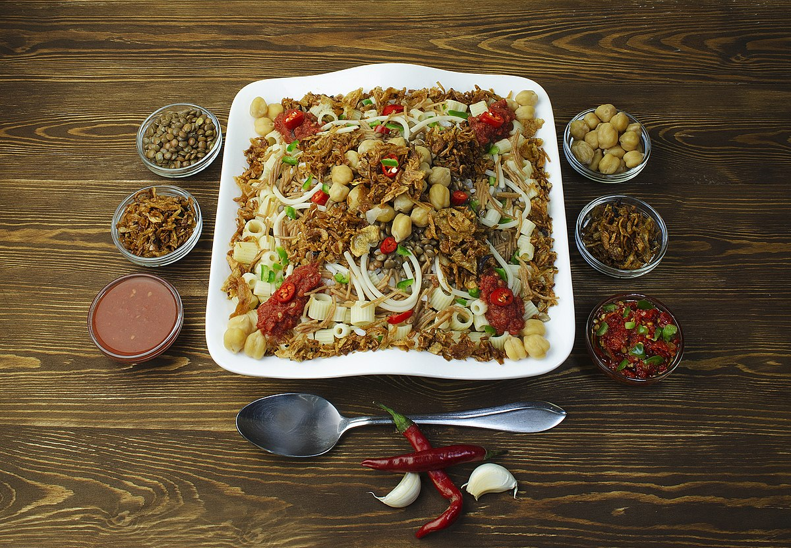

Koshary

The recipe
Koshary is Egypt’s national dish and ultimate comfort food, made by layering rice, lentils, macaroni, and chickpeas, topped with crispy fried onions and a tangy spiced tomato sauce.
It’s a delicious, hearty, and affordable street food that perfectly combines flavors and textures into one iconic dish.
Ingredients
- 2 cups rice
- 1 cup brown lentils
- 1 cup macaroni (small elbows or ditalini)
- 1 cup chickpeas (cooked or canned, drained)
- 2 large onions, thinly sliced
- 4 cloves garlic, minced
- 2 cups tomato sauce
- 2 tbsp tomato paste
- 2 tbsp vinegar
- 1 tsp cumin powder
- 1 tsp chili powder (optional, for spice)
- Salt and black pepper to taste
- Vegetable oil for frying
- 2 tbsp butter or ghee (optional, for rice)
Steps
- Rinse and cook the lentils in salted water until tender, then set aside.
- Cook the rice separately, adding butter or ghee if desired for extra flavor.
- Boil the macaroni until al dente, then drain and set aside.
- Fry the sliced onions in vegetable oil until golden and crispy. Remove and drain on paper towels.
- In the same oil, sauté garlic, then add tomato sauce, tomato paste, vinegar, cumin, salt, pepper, and chili powder. Simmer for 10–15 minutes to make the spicy sauce.
- To assemble: place a layer of rice, then lentils, then macaroni. Top with chickpeas, tomato sauce, and crispy fried onions.
- Serve hot with extra sauce and vinegar on the side.
Home